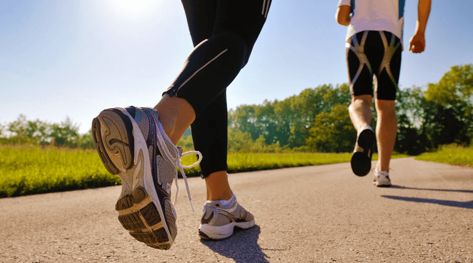
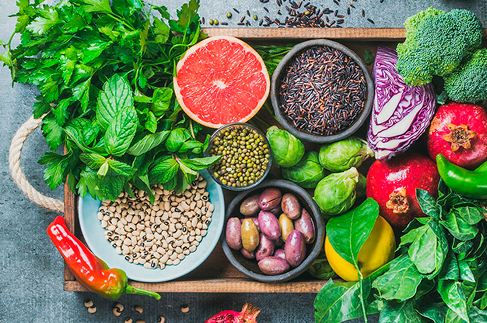
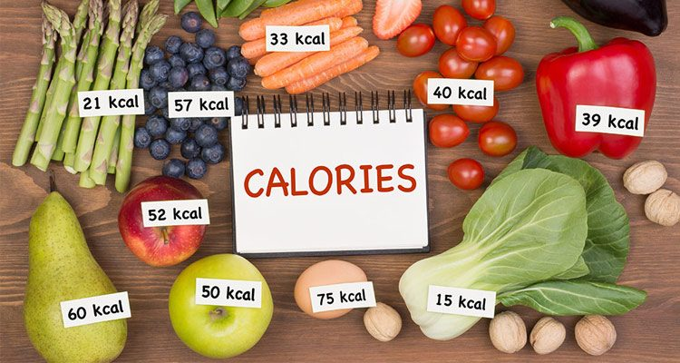
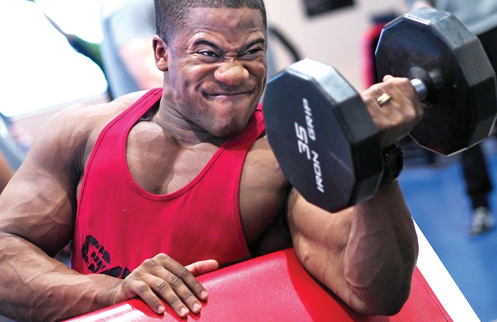

Congrats on making a forward move to get fit as a fiddle and feel extraordinary. Numerous individuals are liable of wishing they could get a sculpted body from eating low quality nourishment and staring at the TV throughout the day. Yet, that is simply not going to occur. Despite the fact that getting fit as a fiddle seems like a long, time-squandering process, the exertion put towards being fit has numerous beneficial outcomes. On the off chance that you need to begin your excursion to having a superior body to feel incredible, here are a few hints:
1. Exercise Daily

Exercise day by day for in any event 60 minutes. You don't need to kill yourself from running, running, and so on., yet you ought to have a type of moderate physical movement in your regular day to day existence. In case you're hoping to shed a couple of pounds quick, do a more significant level power exercise. For instance, go on a stroll at an energetic pace for 60 minutes. Only an admonition, your muscles will hurt after a high power exercise. It might be disturbing, however that implies your body is improving. Make certain to remain hydrated, stretch, and eat nourishment with a better than average measure of protein after every exercise. The protein will help keep your muscles, not fat, reconstructing.
2. Eat the Right Foods and Portion Each Meal

Regardless of how awful your stomach is instructing you to go for candy over sound food, attempt to avoid desserts. Sugar from treats won't assist you with getting fit as a fiddle. Regardless of whether it's only a solitary piece of candy, one will in the long run lead to another. Products of the soil are the best thing to eat while getting into shape. Apples, for instance, work superbly at causing the stomach to feel full for up to 3 to 4 hours. Green vegetables, for example, green beans and broccoli keep the stomach related framework perfect and running. Attempt to design out eating six times each day and setting littler parts, instead of having three huge dinners for the duration of the day. This is on the grounds that you will have less food in your stomach related framework, which implies more vitality is utilized toward your activity.
3. Be Sure to Get Sleep
Despite the fact that the vast majority of us have eight-hour occupations during the day or night, it is critical to get enough rest to energize the body's batteries. Six to eight hours of rest will prop the body up for the duration of the day, yet in the event that you happen to feel tired anytime subsequent to returning home from work, by all methods take a little snooze before working out. You should just rest for about a half hour. This will keep you from remaining up later in the night.
4. Keep Track of Calories and Food Intake Per Day

Monitoring what number of calories you eat in a day will be useful in arranging out your physical working out. Ever wonder why weight lifters' weights are so huge? That is on the grounds that they plan out their dinners and take in increasingly (healthy) calories than the normal individual. Then again, shedding pounds and taking a stab at a skinnier build will include more physical exercise than calories you ingest.
5. Stay Motivated

An important key to being in shape is to set goals and keep a positive mindset. If you stay positive, you will be able to push yourself to get that fit body you've always wanted.
User Comments:
RUSSELL ANTHONY 11/03/20120 at 8:36 pm
So many interesting information I’ve learned from these blogs. I find my diet regimen very effective as I am noticing some reduction in my weight every single week. I have cut down on the carbs and regularly do workout at the gym. Thanks for the information. Reply
JAM DUBOIS 01/04/2020 at `1:12 pm
I enjoy reading your blogs! You are SO sweet for including such information in your blog!! Thank you so much and I’m excited to have found your new blog as well, I just love it!! Reply
TRANSCEND HEALTH 03/27/2019 at 1:56 am
Thank you for sharing this wonderful and informative post. Reply